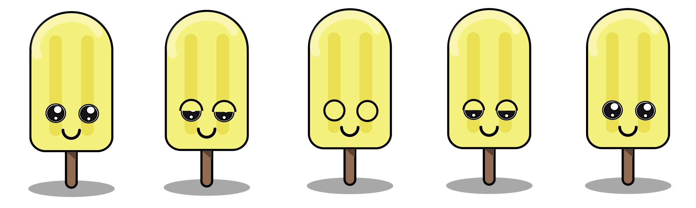
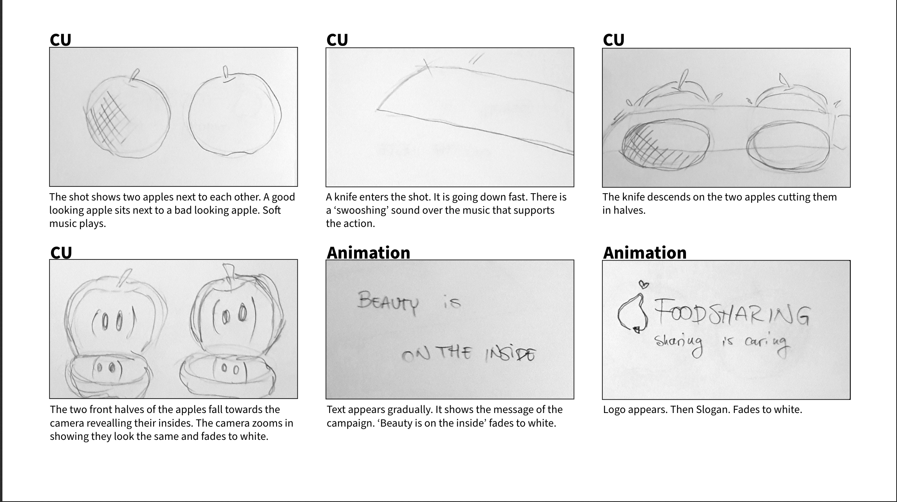

BASIC WEB
Mobile Website - Bauhaus
The focus in this project was to build a website with a layout and viewport for mobile devices.
The design was inspired by a particular art style. Mine was the art style/ art movement called “Bauhaus” from the 1900’s. In this case the style follows very geometric modern style. There’s a clear relationship between art, society and technology. This was the first time I ever worked with HTML and CSS.
Throughout this project I gained basic knowledge about HTML and CSS. Learning to create content with HTML and styling it with CSS. The very basics of coding. I also got an understanding of the design principles of the Bauhaus art style.
LINK HERE
Responsive Website - Bauhaus
In this project my focus was to create a website suitable for different viewports and devices. The website had to have a responsive web layout meaning it could adapt to different size viewports.
In this project I developed my skills in HTML and CSS and learned how to use media queries to make a website responsive and fit different viewports. The large screen version of my website is built with 2 column grid and my smaller screen size version is built with 1 column grid.
Throughout the project I also worked with Adobe XD for the first time and learned how to create a hi-fidelity prototype with a flow.
LINK HERE
BASIC UX
Data Collection
In this project the focus was to learn different ways to gain information and do research. We learned about different methods, desk research, observation research, interviews and surveys. For the first method we had to do a desktop research. This was about collecting already existing data from different places like the internet, libraries, papers etc. I chose to work with the topic “Lego used in the context of children’s learning”. After browsing around I found a lot of PDF’s with research about my chosen topic.
Then I worked with the observation method. This is about observing a setting and describing everything you see, hear and smell. I chose to sit at a Burger King restaurant and observe people and everything they did. With the data I collected, I interpreted it and discovered patterns in people’s behavior.
The interview method is about collecting data by having a sometimes structured conversation with another person. It involves an interviewer, who’s coordinating the conversation and the topics. Then there’s the person who’s getting interviewed. I interviewed a person about social media and her habits on these different platforms.
The last method I used for this project was the survey method. This method is about collecting data by making a list of formal questionnaires. Most of the questions are closed and therefore very easy and quick to answer. Here I was investigating the topic “finding friends in Denmark” and I asked a lot of questions about international students and how they had to deal with finding friends in Denmark.
Over all I gained a lot of knowledge about different research methods and how I can collect different information in future projects.
LINK HEREPrototype
For this project we had to create a XD prototype website in groups for International students coming to Denmark. We did some research regarding the design, content and functionality. The website is targeted towards international students. The microcopy on the page was kept formal but still relaxed to fit the audience of the page. We drew sketches of how we wanted the webpage to look like and then we created a low-fidelity prototype in XD. Then we developed the low-fidelity prototype into a high-fidelity prototype with a wireflow. In the end we did some usability testing. We did the “Think aloud test”. Our focus in this test was to see how our test-persons interacted on our website.
In this project I gained knowledge about developing a low-fidelity into a high-fidelity prototype. And most of all, I gained knowledge about basic usability and how to test a prototype using a “Think aloud test”.
Design Sprint
In this project we had to create a prototype of an app within 5 days. The focus was to get through different phases each day and to create an app with great user experience/usability.
The first day we spend creating ideas using mind maps, card sorting and information architecture. We did different exercises to help us develop a solution. Second day was all about sketching and drawing ideas for the layout of the app. The third day we took important decisions and found the right solution for our app and concept. The fourth day we did the XD prototyping of the app and made the wireflow for it as well. The final day we spent testing our app. We did peer reviews of the app and asked different participants different questionnaires. I took part in all of the phases and decisions in this project.
I gained a lot of knowledge about work progress as a whole with a team. How to divide work each day and get it done in time. I developed my skills in brainstorming, making storyboards and creating an XD prototype that’s ready for usability tests. I also gained knowledge about user experience and how to set up a formal interview.

BASIC ANIMATION
Sprite animation on a background
Doing this project the focus was to create a sprite animation and place it on a background. I was important to choose a drawing style for the animation. I collected different visual elements from my inspiration source. My visual inspirations came from the Kawaii drawing style. The final sprite animation and background was done in illustrator.
Throughout this project I gained a lot of new skills in Adobe illustrator and a lot more practice in finding visual elements for inspiration for the character and background. I gained new skills but I wasn’t satisfied with my final result because I did something wrong in illustrator with my sprite animation, so it jumped a bit when it was placed on the background. Now I know that for next time.
Javascript animation
In this project the focus was to create a website with ten different animations controlled by Javascript. This project included an animated svg and the svg should be controlled by Javascript. I used my character and background from previous project and added different Javascript animations to it. It was important that it was obvious which animation is running and how to stop/start it. A sound is also included to help the viewer understand the website and different animations.
I gained new information about Javascript and was introduced to small basics in Javascript.I started developing an understanding of how Javascript is working.
LINK HERE
Pool Project 1 - Bouncy Ball
The focus in this project was to play around with Javascript and manage to make a project with the skills I had gained at this point. For this project I did a ball bouncing on walls inside a square.
I gained more knowledge about javascript and got to play with it.
LINK HERE
Onboarding
The focus in this project was to create an onboarding application with HTML, CSS and Javascript for international students coming to Denmark. My group and I did a mood board and persona collage to figure out our visual elements in the project. Our visual style was and main inspiration when doing the illustrations was flat design.
Afterwards we did a storyboard that would explain our “storyline” in the application and what we wanted to guide the viewer through. Then we started creating the illustrations and characters for the application. The backgrounds and characters were created in Adobe Illustrator. As for the coding, Javascript was used a lot in this project to control our backgrounds, characters and texts. My part in this project was to create the backgrounds and characters for the application. I didn’t do much coding for this project but I helped coding the frontpage.
My skills were expanded in Illustrator and I got to be very creative for this project. I did a lot of brainstorming and idea creation with my group and we divided the Illustrations between us. As mentioned earlier, I didn’t do that much coding but I was viewing the whole process of the coding.

BASIC CONTENT
Foodsharing Copenhagen
For this project, the focus was to create a campaign site and a production video for Foodsharing Copenhagen to help get people to be more aware of food waste and to get more people to volunteer.
Our group chose to focus on the awareness of food waste in Denmark. We came up with the campaign concept called “Beauty is on the inside” and the main idea behind was to show people that fruit and vegetables can look a bit weird and ugly on the outside but still be perfectly on the inside and edible. We created a website very similar to the original “Foodsharing Copenhagen”-website and followed their given style tile.
I took part in the brainstorming and idea creation phase as well as the production of the video and the coding of the campaign site. I didn’t do the editing of the videos or the XD prototype but I was following the process very closely. In this project I gained a lot of knowledge about idea creation and brainstorming a new concept to an already existing concept.
OBS! This link is not supported in Google Chrome - please use Safari og Firefox!

Storyboard
For the campaign site we had to do a production video. The focus in this project was to create a video with the main message of our campaign. The video had to be short so we could catch the viewers attention fast and use it for social media as well.
The message of our campaign was to show that beauty is on the inside also when we’re talking about fruit and vegetables. For the storyboard, we created a treatment. This treatment consisted of the title of the video, theme and logline. Afterwards we did a synopsis where we’re explaining the “storyline” of our production video.
In this part of the “Foodsharing Copenhagen” campaign project I gained knowledge about creating a storyboard from scratch. This was also the first time I worked with a treatment. That showed me how to collect all information and ideas in a document before creating a storyboard.
Customer Pitch
The focus when creating this pitch was to make it attractive for our customer Foodsharing Copenhagen. We wanted to sell our idea best possible and present and explain our concept. We used the golden circle to build our pitch. We began with “why”. We described why we made this campaign and why this is a problem. Then we explained our whole process throughout the project. How we came up with the idea, how we created our video etc. In the end we presented our what. We presented our whole campaign site and the videos we made for the site. Besides these 3 topics of the pitch we also explained how we wanted to handle and present the campaign on social media. Our small videos are very suitable for SoMe platforms and our copy from our website can match the videos as well.
I gained a lot of new skills in how to present a project in front of a customer. I learned about the Golden circle (why, how and what) This gave me knowledge about pitching that I can use in upcoming projects/pitches.
LINK HERE